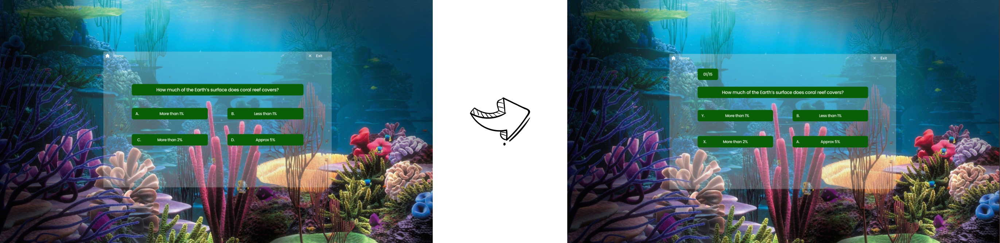
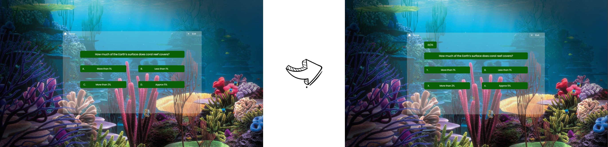

Welcome Screen
Verdura prioritizes user experience with a clear and
concise homepage. Users can seamlessly access the
platform's core features through intuitive cards.
The "Plant Evolution" card offers a deep dive into the
fascinating journey of plants, from germination to flowering
and beyond. For a more immersive learning experience, the
"Virtual Environment" card transports users on a visually
captivating journey through diverse ecosystems, fostering a
deeper understanding of botany. Finally, the "Quiz"
card allows users to test and solidify their botanical
knowledge through engaging and informative activities.
Home Screen
Verdura's user interface prioritizes
ease of navigation and exploration. The central "Environment Cards"
offer a visual selection of diverse natural habitats, while the
"Recently Explored" section facilitates revisiting previously
encountered environments. A user-friendly sidebar menu provides
access to core functionalities: returning to the main screen ("Home"),
searching for specific environments, and creating a personalized list of favorite locations.
This intuitive design empowers users to curate their VR exploration journey.
Environment Selection Screen
Users begin by selecting the "Coral Reef" environment, where they
can learn about different coral types and the ecological significance
of reefs. A virtual guide narrates interesting facts, similar to a friendly
underwater companion. The "+" button at the top acts as a menu to add new
"pages" for exploring specific reef sections. Clicking a "Play" button within
these pages launches a fully immersive VR experience,
transporting users to a vibrant coral reef teeming with colorful life for
an unforgettable underwater adventure.
Quiz Screen
Verdura incorporates a knowledge assessment component through a
dedicated quiz page. Users encounter a series of multiple-choice
questions (presented with Y, X, B, and A buttons) related to the
previously explored environment (e.g., coral reef). A progress bar
visually tracks the user's completion, offering transparency into
the number of questions answered and remaining.
This interactive quiz reinforces learning and solidifies user understanding of the presented information.
Quiz Screen
On choosing the correct answer, the option will turn
blue indicating that it is the right answer.


 
